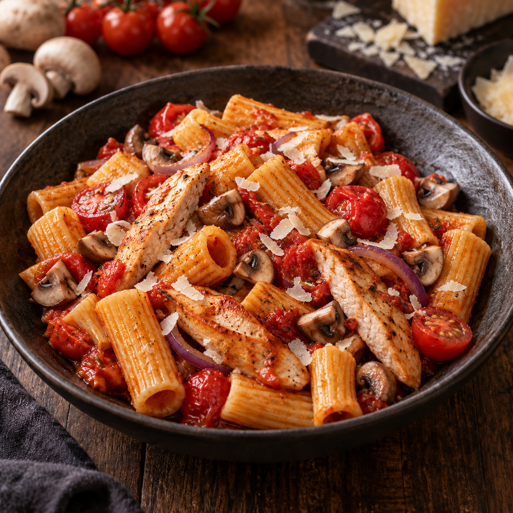

Unsere Klassiker · Pasta
Rigatoni al Pollo Funghi

Lena's
Lieblingspasta
Herzhafte Rigatoni mit saftigen Hähnchenbruststreifen, kleinen Champignonvierteln, süßen Kirschtomaten und roten Zwiebeln in einer kräftigen Tomatensauce. Feine Parmesanspäne machen Lenas Lieblingspasta komplett.
Zutaten
400 gRigatoni
500 gHähnchenbrustfilet
250 gKleine Champignons
250 gKirschtomaten
1Rote Zwiebel
1Knoblauchzehe
2 ELTomatenmark
500 mlPassierte Tomaten
EtwasOlivenöl
Nach BedarfSalz und Pfeffer
Nach BedarfParmesan am Stück
Zubereitung
- Die Hähnchenbrust in Streifen schneiden. Die Champignons putzen und vierteln. Größere Exemplare in entsprechend kleinere Stücke schneiden, damit die Pilze im fertigen Gericht nicht zu grob sind. Kirschtomaten halbieren, die rote Zwiebel in feine Streifen schneiden und den Knoblauch fein hacken.
- Etwas Olivenöl in einer großen Pfanne kräftig erhitzen. Die Hähnchenbruststreifen darin portionsweise goldbraun anbraten, mit Salz und Pfeffer würzen und anschließend aus der Pfanne nehmen.
- Die Champignonviertel in derselben Pfanne bei kräftiger Hitze anrösten. Rote Zwiebel dazugeben und kurz mitbraten. Den Knoblauch hinzufügen und nur wenige Sekunden anschwitzen.
- Das Tomatenmark unterrühren und kurz mitrösten. Die passierten Tomaten angießen und die Sauce etwa 10 Minuten sanft köcheln lassen.
- Währenddessen die Rigatoni in reichlich Salzwasser al dente kochen. Vor dem Abgießen etwas Nudelwasser auffangen.
- Kirschtomaten und Hähnchenbruststreifen zur Sauce geben und nur so lange erhitzen, bis das Fleisch vollständig gar und noch saftig ist. Mit Salz und Pfeffer abschmecken.
- Die Rigatoni unterheben. Falls nötig, mit etwas Nudelwasser schön sämig rühren. Auf Tellern anrichten und mit kleinen, feinen Parmesanspänen vollenden.
Tipp
Die Champignons mit genügend Platz und bei kräftiger Hitze anrösten. So bekommen die kleinen Viertel Farbe, statt im eigenen Saft weich zu werden.